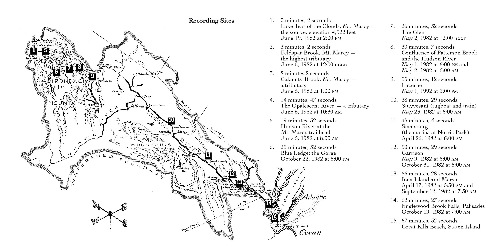

past
Cecile Bouchier & Yuan Gao: Bird Works
May 10 - June 30, 2025
Image Credit: Yuan Gao, '12 birds and a frame'
beauty salon presents ‘Cecile Bouchier & Yuan Gao: Bird Works’. Meant to be viewed at night, this show is comprised of works which stem from a deep connection with the Castaic region of Southern California. Bouchier has for decades made diorama boxes which depict dream-like scenes involving anthropomorphized birds, dried plant material, bee hives, ash, and found objects from around her home in the Mojave desert. Gao goes out into the mountains at night and exposes film to moonlight in uncanny ways; his recent film 12 birds and a frame presents short fragments which correspond to the hours on an ornithological novelty clock in the darkroom where the film was developed. It is presented alongside various mixed-media works, photographs, and drawings by Bouchier.
Possible Rainbows
February 15 - April 12, 2025

Image Credit: Jack Dettling 'long glissando (possible rainbows) [detail]'
“a moving tone travels up and down an octave above a stable tone over the course of 144 minutes
at 48 points along the way, where these two frequencies make whole number ratios, they are harmonized with a bass tone and 8 other pitches selected randomly from the first 64 harmonics above a constantly shifting root
a long arc invisible in the air, an endless cycle of possible rainbows“
beauty salon presents a group show of spectrum and rainbow themed works including a sound installation by Jack Dettling and visual works by Laurie Anderson, Rema Ghuloum, David Gilbert, Matthew Leifheit, Dan Levenson, Ellie Pyle, Lauren Strom-Berg, and Dan Torop.
Tim Feeney: Fault Map
November 22, 2024 - January 18, 2025

Twenty-four speaker nests assembled from small wooden filing drawers, prepared with transducers, and filled with gravel of differing size, weight, and material. Each is driven by one of twelve channels of low-frequency noise, which rattles the particles in each drawer.
The frequency, length, and intensity of shaking at each speaker increases and accelerates over the course of an hour in proportion to statistics tracking temperature, drought, and wildfire frequency in Southern California. The intensity of sound increases from single entrances in the first quarter of each hour to a constant roaring in the last, and we hear the proportional acceleration of climate change over the last seventy years.
As we listen, we become aware that our seemingly static surroundings are changing, implacably, at scale and speed too slow and large to be grasped by an individual at an instant.
NOT US
September 14 - November 9, 2024

Image Credit: Peter Ablinger
beauty salon presents NOT US, a group show featuring the recent sound work ‘NICHT WIR’ of eminent Berlin-based composer and multimedia artist Peter Ablinger. This piece for ‘two mutually affecting metal foils’ is an exercise in acoustic feedback which “seems to lead its own independent life. Each foil responds to the other, but the system as a whole also seems to respond to the environment.” Acting as both speaker and microphone, one speaks what the other hears to create an ever-evolving interdependent duet. The Ablinger is paired with works by Davie Kaim, Paul Mpagi Sepuya, and Joey Strella which present figures in various states of abstraction and evoke ideas of kinship, mirroring, and the poetics of obfuscation.
Sadie Weis
June 29 - August 30, 2024
Image Credit: Sadie Weis
beauty salon presents an array of sculptures, site-specific installation, and works on paper by Berlin-based artist Sadie Weis. The sculptures are 3D printed versions of curious artifacts comprised of found industrial objects which are often partially crystallized or melted; they are simulacra which have taken on new properties as they have been reproduced, relocated, and manipulated by Weis in Los Angeles. Additionally, through an idiosyncratic monotype printing process she hybridizes painting and silkscreening to create otherworldly abstractions which emerge from vivid dream imagery and further play on ideas of simulation and reproducibility.
Water Music
April 21 - June 9, 2024

Image Credit: Annea Lockwood
“Since 1970 I have recorded rivers in many countries, not to document them, but rather for the special state of mind and body which the sounds of moving water create when one listens intently to the complex mesh of rhythms and pitches.”
-Annea Lockwood
beauty salon presents Annea Lockwood’s seminal installation A Sound Map of the Hudson River (1989) alongside various water-themed works by John Cage, Jennifer Calivas, Kostis Fokas, Kevin Ford, Clifford Prince King, Marie Lorenz, Valentina Rosset, Victoria Sambunaris, Pacifico Silano, and Lauren Strom-Berg.
Robert Appleton: Sock Works
February 7 - March 30, 2024
Photo Credit: Amy Eckert
beauty salon is proud to present the sock works of Robert Appleton. The show is comprised of 6 garments and a patchwork curtain alongside photographs by Amy Eckert which offer a contextual glance into Appleton's world of imaginative and often scathingly humorous performance. An early video collaboration with Peter Celli, Peter Shaprio, and Liz Watson will also be shown. The gallery would like to thank Amy Eckert, Peter Celli, and Appleton's Estate for their kind cooperation in producing this show.
star.songs
November 15, 2023 — January 12, 2024

For its inaugural installation, beauty salon presents an iteration of an ongoing collaboration between LA-based artists Ellie Pyle and L. Castelvetro. This work grows out of their extensive correspondence and draws from ideas of celestial motion, painterly notions of the representation of 3D space on a 2D surface, the music of Baroque composer Heinrich Schütz, and explorations of non-linear co-temporalities. This show is comprised of 6 paintings, 6 co-existing synthesized sound environments, and several smaller works.